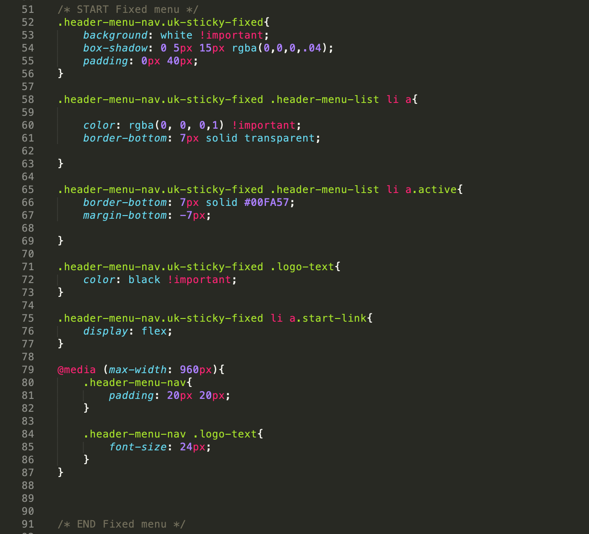

Created: 8/10/2020
By: Soyol-Orgil E.
Email: website.soyol@gmail.com
Thank you for purchasing my theme. If you have any questions that are beyond the scope of this help file, please feel free to email via my user page contact form here. Thanks so much!
Noah template is quite simple that is written on HTML5&CSS3 and based on your needs you can change it to any form. To do this kind of changes you’ll need a bit of knowledge of HTML&CSS. This web is created by using Uikit. It’s very easy to use Uikits operational parts, and even it’s possible to build web interface.
Make sure all of the files that’s written must be included to work your web design!
/In css folderThis file contains the main design CSS, and CSS-related changes will be made on this file.
Some configuration CSS has been done in this file, and the general classes are written here.
This is a UIKit-related file, so no changes will be made here.
Image files are located here such as Jpg, png.
You can write your own javascript. Template is empty because there is no additional JS written.
This is a UIKit-related file, so no changes will be made here.
Since its single page there is only one index.html page is shown. This page has 7 seven sections and each section locates in section tag. Class is given to each section. For example: Section-one, .section-two, .section-three etc.
Each section is formatted by the class and if you want to change it, go to /css/custom.css and search for the class name.
The HTML is written using UIKit script according to the standard. Additional UIKit grid systems, icons and other components are available to use. Documentation is also available at Getuikit.com.
I'm using two CSS files in this theme. The first one is a generic reset file /main.js/.
It’s written on CSS and it has formatted on HTML by class name.
The second file contains all of the specific stylings for the page. The file is separated into sections using:
/* START Fixed menu */ some code /* END Fixed menu */ some code /* START AboutUs container */ some code /* END AboutUs container */ some code etc, etc.
It has this kind of structure that will be easy to make changes in any part you want to make changes to.
We recommend that if you cannot find in CSS file you can do the inspect element by searching from web page.
To make a change or if you face with some errors please contact us and we will fix it immediately.
You can write your own javascript. Template is empty because there is no additional JS written.
This is a UIKit-related file, so no changes will be made here.
I've used the following images, icons or other files as listed.
Once again, thank you so much for purchasing this theme. As I said at the beginning, I'd be glad to help you if you have any questions relating to this theme. No guarantees, but I'll do my best to assist. If you have a more general question relating to the themes on ThemeForest, you might consider visiting the forums and asking your question in the "Item Discussion" section.
Soyol-Orgil E.